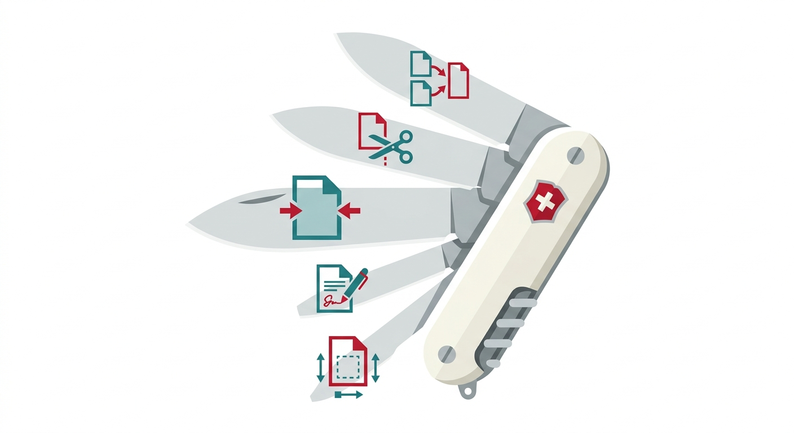
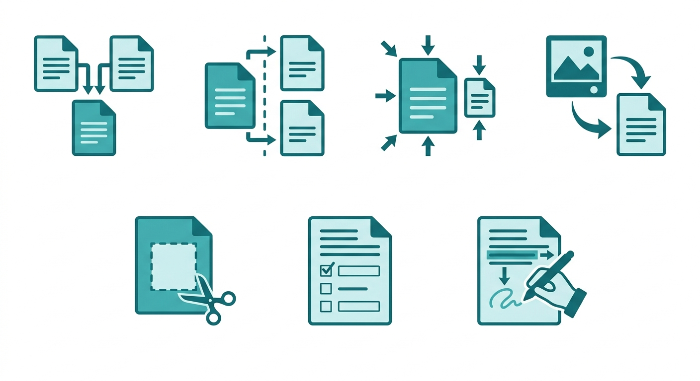
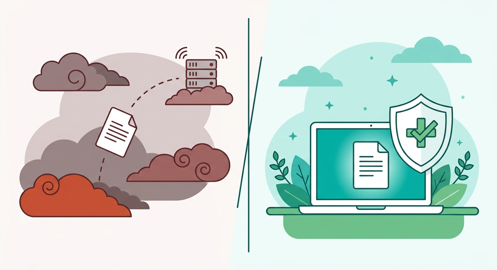

Łączenie, dzielenie, kompresja, przycinanie, konwersja obrazków, formularze i adnotacje z podpisem — wszystko w jednym narzędziu, w przeglądarce, bez uploadu.
Otwórz PDF Tools →Problem z narzędziami PDF w 2026 roku
Potrzebujesz połączyć dwa PDF-y. Wchodzisz na pierwszą stronę z Google — „darmowy merger PDF”. Dostajesz: banner z cookies, obowiązkową rejestrację, limit 2 plików dziennie i informację że Twój dokument właśnie wylądował na serwerze w Irlandii.
Następnego dnia potrzebujesz skompresować PDF. Inna strona, kolejna rejestracja, kolejne „Twój plik jest przetwarzany na naszym serwerze”. Potem podpis elektroniczny — trzecie narzędzie.
Każda z tych operacji wymaga osobnego serwisu. Każdy z nich ma dostęp do Twoich dokumentów.

Co potrafi PDF Tools?
Jedno narzędzie, siedem zakładek. Każda operacja działa w przeglądarce — plik nie opuszcza Twojego urządzenia.
Łączenie PDF (Merge)
Przeciągnij kilka plików, zmień kolejność miniaturkami, kliknij Połącz. Tryb stron pozwala mieszać strony z różnych dokumentów.
Dzielenie PDF (Split)
Zaznacz strony do zachowania na podglądzie miniatur. Opcja ZIP — każda strona jako osobny plik.
Kompresja PDF
Trzy presety (Lekka, Zbalansowana, Maksymalna), suwak jakości i usuwanie metadanych. Tekst zostaje nienaruszony.
Obrazki → PDF
Przeciągnij JPG, PNG, WebP lub AVIF — każdy obrazek to strona. Kolejność przez drag & drop.
Przycinanie stron (Crop)
Zaznacz obszar na podglądzie. Zastosuj do jednej strony lub wszystkich naraz.
Formularze PDF
Automatyczne wykrywanie pól. Wypełnij w przeglądarce, opcja flatten blokuje pola po zapisie.
Adnotacje i podpis
Tekst, rysowanie, kształty, stemple (WERSJA ROBOCZA, ZATWIERDZONY, POUFNE), podpis odręczny i wstawianie obrazków.
1. Łączenie PDF — scal dokumenty w jeden plik
Łączenie plików działa w dwóch trybach. Tryb plików — przeciągnij dokumenty i zmień ich kolejność miniaturkami. Tryb stron — otwórz kilka PDF-ów i mieszaj pojedyncze strony z różnych dokumentów w dowolnej kolejności.
Kiedy przydatne:
- Scalanie zeskanowanych dokumentów w jeden plik
- Tworzenie kompletnej oferty z kilku PDF-ów (cover + treść + cennik)
- Składanie umowy z załącznikami
2. Dzielenie PDF — wyciągnij strony, które potrzebujesz
Wgraj dokument i zaznacz strony do zachowania na podglądzie miniatur. Niezaznaczone strony zostaną pominięte. Opcja ZIP pozwala pobrać każdą wybraną stronę jako osobny plik — przydatne, gdy chcesz rozdzielić dokument na rozdziały.
Kiedy przydatne:
- Wyciąganie kilku stron z długiego raportu do wysyłki emailem
- Usuwanie niepotrzebnych stron (puste strony, duplikaty)
- Dzielenie dokumentu na rozdziały
3. Kompresja PDF — zmniejsz plik do wysyłki
Trzy presety kompresji: Lekka (minimalna utrata jakości), Zbalansowana (optymalny stosunek rozmiaru do jakości) i Maksymalna (najsilniejsze zmniejszenie). Suwak jakości pozwala precyzyjnie dobrać poziom kompresji. Opcja usuwania metadanych dodatkowo zmniejsza plik.
Większość rozmiaru PDF-a to osadzone obrazki. Kompresja „Zbalansowana” zmniejsza plik o 40-60% bez widocznej utraty jakości. Do wysyłki emailem i przeglądania na ekranie jest to wystarczające.
| Serwis | Limit załącznika |
|---|---|
| Gmail | 25 MB |
| Outlook / Microsoft 365 | 20 MB |
| Yahoo Mail | 25 MB |
| WP Poczta | 20 MB |
| Onet Poczta | 15 MB |
4. Obrazki → PDF — stwórz dokument ze zdjęć
Przeciągnij pliki JPG, PNG, WebP lub AVIF — każdy obrazek staje się osobną stroną w PDF-ie. Kolejność stron zmienisz przez drag & drop na podglądzie miniatur.
Kiedy przydatne:
- Tworzenie PDF-a ze zdjęć dokumentów (dowód osobisty, faktury papierowe)
- Portfolio fotograficzne w jednym pliku
- Zeskanowane paragony do rozliczenia
5. Przycinanie stron — usuń marginesy i wytnij fragmenty
Zaznacz prostokątny obszar na podglądzie strony. Możesz zastosować przycięcie do jednej strony lub do wszystkich stron naraz — przydatne, gdy cały dokument ma zbyt szerokie marginesy.
Kiedy przydatne:
- Usuwanie szerokich marginesów z dokumentów prawnych
- Wycinanie konkretnego fragmentu (tabela, wykres)
- Przygotowanie dokumentu pod inny format wydruku
6. Formularze PDF — wypełniaj bez drukowania
Narzędzie automatycznie wykrywa pola formularza w PDF-ie. Wypełnij je bezpośrednio w przeglądarce — bez drukowania, skanowania i ponownego zapisywania. Opcja flatten blokuje pola po zapisie, dzięki czemu odbiorca nie może ich edytować.
Kiedy przydatne:
- Wypełnianie urzędowych formularzy PDF
- Ankiety i kwestionariusze
- Formularze ZUS, PIT, umowy z polami
7. Adnotacje i podpis elektroniczny
Pełny edytor adnotacji: tekst, rysowanie ołówkiem, zakreślacz, kształty (prostokąt, elipsa, linia), stemple statusu (WERSJA ROBOCZA, ZATWIERDZONY, POUFNE), podpis odręczny rysowany na canvasie i wstawianie obrazków. Każdą operację można cofnąć (undo/redo).
Podpis narysowany w narzędziu jest osadzony w PDF-ie jako grafika. Dokument z podpisem jest gotowy do wysłania — nie potrzebujesz Acrobata ani żadnego płatnego programu.
Kiedy przydatne:
- Podpisywanie umów, aneksów, pełnomocnictw
- Zaznaczanie poprawek na dokumentach (korekta, review)
- Oznaczanie dokumentów stemplami statusu

Dlaczego w przeglądarce, a nie na serwerze?
Kiedy wrzucasz PDF na serwis typu „merge PDF free”, Twój plik fizycznie trafia na cudzy serwer. Nawet jeśli serwis obiecuje że „usuwa pliki po godzinie” — nie masz nad tym kontroli. Umowa z klientem, CV, dane finansowe — to wszystko przechodzi przez infrastrukturę, której nie znasz.
PDF Tools działa inaczej. Cała logika — parsowanie PDF-a, kompresja obrazków, łączenie stron — wykonuje się w Twojej przeglądarce przez JavaScript i bibliotekę pdf-lib. Plik nigdy nie opuszcza Twojego komputera.
Otwórz narzędzie, wrzuć plik, otwórz DevTools (F12 → zakładka Network). Podczas przetwarzania nie zobaczysz żadnego requestu z danymi pliku — bo go nie ma.
Limity i ograniczenia
Transparentność jest ważniejsza od marketingu. Oto czego narzędzie nie potrafi:
- OCR — nie zamieni skanu w tekst z możliwością kopiowania
- Szyfrowanie/hasło — nie otworzysz PDF-a zabezpieczonego hasłem
- Edycja tekstu — nie zmienisz treści istniejącego PDF-a. Narzędzie dodaje warstwy (adnotacje), nie edytuje oryginalnych elementów
- Limit rozmiaru — domyślnie 100 MB na plik (odblokowanie możliwe, ale duże pliki mogą spowolnić przeglądarkę)
- Limit plików — domyślnie 20 plików na operację
Porównanie z popularnymi alternatywami
| Funkcja | PDF Tools | Smallpdf | iLovePDF | Adobe Online |
|---|---|---|---|---|
| Cena | Za darmo | Freemium | Freemium | Subskrypcja |
| Łączenie | ✓ | ✓ | ✓ | ✓ |
| Dzielenie | ✓ | ✓ | ✓ | ✓ |
| Kompresja | ✓ | ✓ | ✓ | ✓ |
| IMG → PDF | ✓ | ✓ | ✓ | ✓ |
| Przycinanie | ✓ | ✗ | ✗ | ✓ |
| Formularze | ✓ | ✗ | ✗ | ✓ |
| Adnotacje + podpis | ✓ | ✓ (limit) | ✗ | ✓ |
| Konto wymagane | Nie | Tak | Tak | Tak |
| Pliki na serwerze | Nie | Tak | Tak | Tak |
| Limit dzienny | Brak | 2 operacje | Ograniczony | Brak (płatne) |
Podsumowanie
Siedem zakładek pokrywa operacje, do których większość ludzi sięga po osobne serwisy lub płatnego Acrobata. Jedno narzędzie, zero kont, zero uploadu, zero limitów dziennych.
Najszybszy sposób na start? Otwórz PDF Tools i przetestuj wszystkie 7 funkcji.